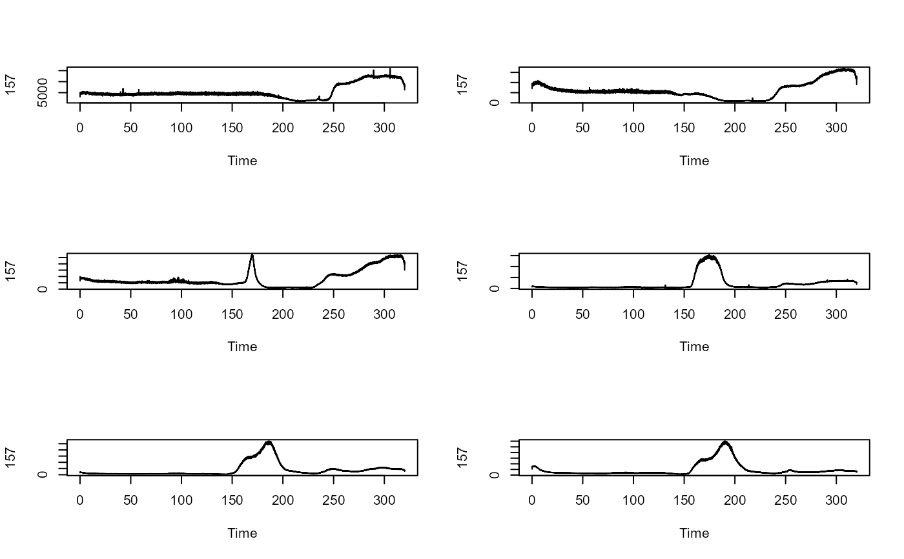

Transfer standard information to a data.frame containing peak/signal data.
Arguments
- peak_data
Data.frame containing peak information.
- wf
Calibration method/Workflow.
- ExtCal_unit
The measurement unit of the ExtCal workflow to correctly format the output.
- ExtGasCal_unit
The measurement unit of the ExtGasCal workflow to correctly format the output.
- std_info
A numeric value giving the analyte mass (ExtCal), the concentration of an ionic standard solution in µg/L (oIDMS) or the gas flow of calibration gas (ExtGasCal).
- fac
A factor to convert the gas flow (gas_density x mass_fraction x mass_percentage).
Value
A data.frame with the standard no, the isotope, the peak/signal boundaries in seconds, the peak area in counts/mean signal in cps and information for the analyte content in the calibration standard.
Details
Selecting "ExtGasCal" enables the input of a conversion factor to calculate the gas flows. A conversion factor (mL/min to µL/s) is implemented in the function.
Examples
# import all cali files into a list from example data folder
cali_imp <- ETVapp::ETVapp_testdata[["ExtCal"]][["Cali"]]
# process cali files (and generate plots)
cali_pro <- process_data(cali_imp, c1 = "157", fl = 7)
par(mfrow=grDevices::n2mfrow(nr.plots = length(cali_pro)))
for (i in 1:length(cali_pro)) plot(cali_pro[[i]][,1:2], type="l")

# get cali peaks and combine
peak_start <- rep(145, length(cali_pro))
peak_end <- seq(180, 230, length.out=length(cali_pro))
cali_pks <- ldply_base(1:length(cali_pro), function(i) {
pk <- get_peakdata(cali_pro[[i]], PPmethod = "Peak (manual)", int_col = "157",
peak_start = peak_start[i], peak_end = peak_end[i])
})
tab_cali(peak_data = cali_pks, wf = "ExtCal", std_info = seq(0,50,10))
#> Isotope Start [s] End [s] Area [cts] BLmethod Analyte mass [pg]
#> 1 157 145 180 26048.55 modpolyfit 0
#> 2 157 145 190 47578.90 modpolyfit 10
#> 3 157 145 200 210233.16 modpolyfit 20
#> 4 157 145 210 3470357.49 modpolyfit 30
#> 5 157 145 220 7164737.80 modpolyfit 40
#> 6 157 145 230 8220886.72 modpolyfit 50
# check if unit specification works
si <- seq(0,50,10)
tab_cali(peak_data = cali_pks, wf = "ExtCal", ExtCal_unit = "ng", std_info = si)
#> Isotope Start [s] End [s] Area [cts] BLmethod Analyte mass [ng]
#> 1 157 145 180 26048.55 modpolyfit 0
#> 2 157 145 190 47578.90 modpolyfit 10
#> 3 157 145 200 210233.16 modpolyfit 20
#> 4 157 145 210 3470357.49 modpolyfit 30
#> 5 157 145 220 7164737.80 modpolyfit 40
#> 6 157 145 230 8220886.72 modpolyfit 50
tab_cali(peak_data = cali_pks, wf = "ExtGasCal", ExtGasCal_unit = "\u00b5L/min", std_info = si)
#> Isotope Start [s] End [s] Area [cts] BLmethod Gas flow [µL/min]
#> 1 157 145 180 26048.55 modpolyfit 0
#> 2 157 145 190 47578.90 modpolyfit 10
#> 3 157 145 200 210233.16 modpolyfit 20
#> 4 157 145 210 3470357.49 modpolyfit 30
#> 5 157 145 220 7164737.80 modpolyfit 40
#> 6 157 145 230 8220886.72 modpolyfit 50
#> Gas flow [ng/s]
#> 1 0
#> 2 0
#> 3 0
#> 4 0
#> 5 0
#> 6 0
# import and process cali data of `oIDMS` workflow
spion_imp <- ETVapp::ETVapp_testdata[["oIDMS"]][["sp_ionic"]]
cali_pks <- ldply_base(1:length(spion_imp), function(i) {
get_peakdata(spion_imp[[i]][,c("Time", "197Au")], int_col = "197Au",
PPmethod = "mean signal", peak_start = 0.003, peak_end = 60)
})
tab_cali(peak_data = cali_pks, wf = "oIDMS", std_info = c(20, 50, 100, 200, 500))
#> Isotope Start [s] End [s] Mean Signal [cps] Concentration [µg/L]
#> 1 197Au 0.003 60 156366.77 20
#> 2 197Au 0.003 60 30696.15 50
#> 3 197Au 0.003 60 322343.25 100
#> 4 197Au 0.003 60 70781.89 200
#> 5 197Au 0.003 60 844833.94 500